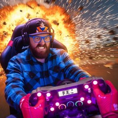

Bosskronik
Raw & Honest Sim Racing • iRacing
Military vet & ex-pro biathlete. Full-race POVs — the wins, the crashes, and everything I got wrong.
7,340subs548videos249KviewsClass AiRacing
Find me everywhere
Latest drops
- Loading…
Coming up
- Loading…
Latest race — watch here
Support the channel & gear
ON THE RIG — DOF Reality H3 motion rig • MOZA R21 Ultra wheelbase
Some links above are affiliate links — if you buy through them I earn a commission at no extra cost to you.